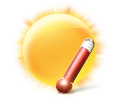

{{ cityWeather["weather"][0].description }}

{{ cityWeather["main"].temp }} ° C
Max/Min
{{ cityWeather["main"].temp_max }}°C / {{ cityWeather["main"].temp_min }}°C
Wind
{{ cityWeather["wind"].speed }} mph
Humidity
{{ cityWeather["main"].humidity }} %
Pressure
{{ cityWeather["main"].pressure }}